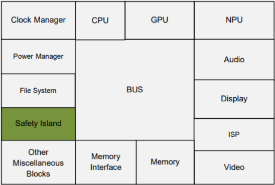
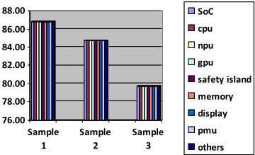
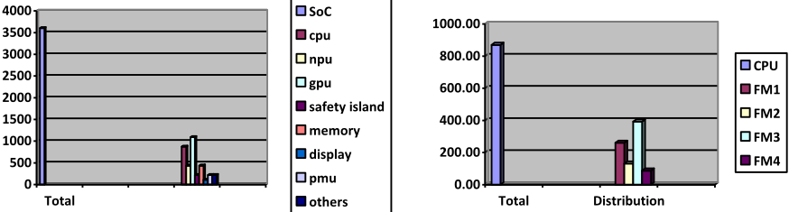
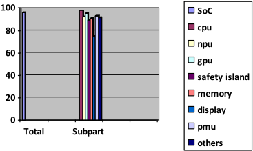

Methodology for Efficient Fault Injection using Random Sampling
基于随机抽样的高效故障注入方法论
简介
论文针对安全关键 SoC 穷举 fault injection 资源消耗过大的问题，提出基于统计随机抽样的高效故障注入方法论。方法上先以 FMEA 与风险分级确定注入目标，采用 transient+permanent 综合故障模型，在约 300 万门汽车 SoC、约 4000 万故障总体中按统计公式确定样本量，每轮抽取约 3600 个故障，用 simulation 与 emulation 两种引擎执行注入，并以置信度与 Margin of Error 量化结果。针对传统随机抽样在 FMEDA 中只能套用均匀 coverage 的缺陷，进一步提出按各层级 failure rate/failure mode 分布加权的 constrained random sampling。结果显示 90% coverage 目标下 MOE 为 ±1.19%，约束抽样还发现了传统方法遗漏的 CPU 子系统关键失效模式。该统计抽样框架可直接借鉴到团队 TFMEA/FMEDA 的 coverage 论证与 fault injection campaign 设计。
问题
安全关键系统（如 automotive SoC）为验证安全架构对故障的检测与控制能力，需要对海量故障场景做穷举 fault injection，但穷举测试所需测试与调试资源过大而不可行；同时传统随机抽样结果在集成到 FMEDA 时只能对整个 SoC 施加均匀 coverage，无法反映各 subpart 风险与关键度的差异。论文要解决如何在保证统计有效性的前提下，用抽样方式高效完成 fault injection 并获得可信、可分解的 coverage 结论。
方法
定义多样化 test workload 代表典型系统行为与使用场景；用统计公式确定样本量 n、置信水平与 margin of error；以 FMEA 分层确定注入目标并结合环境暴露与安全角色做风险优先级排序；采用同时覆盖 transient 与 permanent 故障的综合故障模型；在 SoC 级用 simulation 与 emulation 两种 fault injection 引擎执行每轮约 3600 个故障的随机样本并聚合多轮结果。进一步提出 constrained random sampling：先分析各层级（CPU、memory、bus、peripheral 等）的 failure mode 分布，按观测或预期 failure rate 推导 scaling factor 作为乘子调整各层级故障被抽中的概率，使样本既统计代表又贴合系统真实风险分布，并可将同一方法下沉到 subpart 级按 failure mode 分布控制故障生成粒度。
关键结果
案例 SoC 规模约 300 万门（approximately three million gates），故障总体约 4000 万（approximately 40 million）
每个随机样本约 3600 个故障即可满足 coverage 目标并维持可接受的误差范围
在 90% coverage 目标下计算得 Margin of Error (MOE) 为 ±1.19%
constrained random sampling 发现了传统抽样方法未能充分代表的 CPU 子系统关键失效模式，并促成针对性设计改进与系统可靠性提升
论文指出将顶层均匀 coverage 直接套用到 FMEDA 各 subpart 时存在明显不一致；按 failure rate/failure mode 分布分解后，针对各 subpart 的 targeted stimulus test 与 guided approach 为 fault injection closure 提供了有效闭环机制
创新点
区别于已有的 random/stratified/adaptive sampling 研究，本文将随机抽样与 workload 特性结合，并提出以 failure mode/failure rate 分布推导 scaling factor 的 constrained random sampling，使抽样过程与系统真实风险分布对齐；同时明确指出并处理 FMEDA 中 uniform coverage 假设的局限，把顶层 coverage 统计分解到 subpart 与 failure mode 粒度，兼顾统计显著性与资源效率。
团队参考意义
相关度级别：high
命中能力域：2.6 Fault simulation/Z01X/TFMEA | 2.5 功能安全与安全机制
理由：论文核心是统计抽样 fault injection 与 FMEDA coverage 论证，直接命中 2.6（基于功能 stimulus 的 fault injection、fault grading、FuSa TFMEA/FMEDA 论证关联）与 2.5（FMEA 驱动的目标选择、diagnostic coverage、safety verification、failure mode 建模）。团队在 LPDDR/HBM4/UCie 等 IP 的功能安全开发中，需要用有限的 fault injection 资源支撑 TFMEA/FMEDA 的 coverage 主张，本文的样本量/置信度/MOE 计算框架与 constrained random sampling 提供了可直接复用的统计方法论；其对 uniform coverage 局限的分析也与团队将顶层 coverage 分解到子模块与失效模式的需求高度一致。
建议动作：深入精读并做内部分享
中文全文

Methodology for Efficient Fault Injection using Random Sampling
Prashantkumar S. Sonavane，三星印度公司副技术总监
A. Abstract
故障注入是评估系统在恶劣条件下的可靠性与韧性以及测试随机故障的一项关键技术。实现或维持安全状态的一种做法是运行穷举式故障注入，以检验安全架构检测故障或控制失效能力的有效性。然而，由于测试和调试所需的大量资源，穷举式故障注入测试可能并不切实际。在本文中，我们提出了一种以随机采样为核心的方法，以便在考虑各种测试工作负载的情况下高效地执行故障注入测试。
我们的方法包含若干关键步骤：首先，定义一组多样化的测试工作负载，用以代表典型的系统行为和使用场景。接着，利用随机采样技术在每个工作负载内选取一个用于注入的故障子集。这种随机采样策略确保所注入的故障能够代表不同使用模式下潜在的系统脆弱性，而无需进行穷举测试。此外，我们引入了一种方法，将每个工作负载内多个随机采样的结果相结合，从而得出关于系统行为和韧性的具有统计显著性的结论。通过汇总各种故障注入的结果，我们的方法提供了对系统在各种条件下鲁棒性的全面理解。通过实验验证与分析，我们证明了与穷举式故障注入测试相比，我们基于随机采样的方法的有效性与高效性。我们的结果表明，随机采样在资源利用与测试覆盖之间取得了平衡，使其成为复杂系统中一种实用且有据可依的故障注入方法。
总而言之，本文提出了一种清晰且有据可依的方法，用于在故障注入测试中利用随机采样。通过采用针对不同测试工作负载量身定制的随机采样技术，我们的方法提供了一种精简而有效的手段来评估系统的可靠性与鲁棒性，同时缓解了与穷举式故障注入相关的挑战。
B. Introduction and Related Work
在故障注入测试领域，人们已探索了多种方法与技术，以应对穷举测试的挑战。先前的研究考察了各种采样策略，包括随机采样、分层采样与自适应采样，以优化
Vedant Garg, Synopsys USA (gargv@synopsys.com) (prashant.s2@samsung.com)
故障注入实验。随机采样在软件测试与容错领域已得到广泛研究。
尽管这些现有方法提供了宝贵的见解，我们的方法的独特之处在于将随机采样与针对特定工作负载的考量相结合，从而在多样化的系统场景中实现高效的故障注入测试。
C. Application
所提出的用于故障注入测试的随机采样方法学，可实际应用于系统可靠性与韧性至关重要的各类领域。其中一个关键应用领域是安全关键系统的开发与验证，例如汽车系统。
例如，在汽车工程领域，我们的方法学可用于评估汽车片上系统（SOC）的鲁棒性。通过基于从多样化驾驶场景中随机采样，向该SOC的各个子组件注入故障，我们能够识别关键的失效模式并改进系统设计。
D. Case Study: Automotive SoC
故障注入在评估系统在故障条件下的韧性方面起着至关重要的作用。该技术的有效性在很大程度上取决于故障模型的选择以及系统内特定目标位置的识别。这些决策至关重要，因为它们确保测试期间注入的故障与系统的实际运行环境相关，并符合其安全要求。
在本工作中，我们将故障注入应用于一个包含约三百万门电路的片上系统（System-on-Chip, SoC）设计。我们同时利用了基于仿真（simulation）和基于硬件仿真（emulation）的故障注入引擎来高效地执行故障注入实验，从而收集到全面的度量指标。作为下一步，我们计划引入形式化分析，以完成针对该汽车SoC的故障注入流程。图1给出了该SoC的高层次框图，其中突出显示了安全岛，这也是本节的重点。

表1将SoC的失效率分解为其各个组成部分。需要注意的是，所提供的数值是经过缩放的，仅用于说明目的，以支持本文所讨论的示例，并不反映正在开发中的SoC的实际数值。
| 0 | 1 | 2 |
|---|---|---|
| Part | SubPart | Failure Rate |
| SOC | 155 | |
| CPU | 40 | |
| NPU | 20 | |
| GPU | 50 | |
| Safety Island | 10 | |
| Memory | 20 | |
| Display | 5 | |
| PMU | 10 | |
| Others | 10 |
| 0 | 1 | 2 |
D.1 Fault Model Selection
选择合适的故障模型对于准确模拟系统在其运行寿命期间可能经历的各种故障条件至关重要。在汽车片上系统（SoC）等安全敏感领域，这一点尤为关键，因为系统必须在各种故障条件下保持其完整性。故障模型必须涵盖对系统安全构成最大风险的故障类型，从而确保测试过程既严格又具有针对性。[10]
常见的故障模型包括单事件翻转（SEU）、固定型故障（stuck-at fault）和瞬态故障，每种模型代表不同的失效机制。SEU 通常模拟由辐射等外部因素引起的软错误，而固定型故障则代表一种更为持久的失效，通常由制造缺陷或元件磨损导致。
在我们的工作中，我们采用了一种综合性的故障模型，将瞬态故障和永久性故障整合在一起。这一方法源于现代 SoC 中失效模式的复杂性和多样性，故障的影响会因其性质不同而产生很大差异。模型中的瞬态故障用于模拟宇宙辐射等环境影响所产生的效应，这类影响可能导致软错误，但不会对硬件造成永久性损伤。相比之下，永久性故障用于表示长期存在的硬件问题，例如缺陷或随时间推移而产生的性能退化。
通过将这两类故障纳入我们的模型，我们能够对系统的韧性进行全面而真实的评估。这种多层面的方法确保我们的故障注入活动覆盖广泛的潜在失效场景，从而提升被测 SoC 的鲁棒性和可靠性。[5]
D.2 Target Selection for Fault Injection
为故障注入选择目标位置是一个关键步骤，需要仔细考虑系统的架构及其各组件的重要性。在现代汽车片上系统（SoC）中，由于其集成了多个处理核心、存储器块和外设接口，在整个系统范围内均匀地注入故障既不切实际也不高效。因此，我们的方法侧重于优先选择对系统安全和运行可靠性至关重要的组件。
我们采用分层方法进行目标选择，首先从失效模式与影响分析（FMEA）入手。该分析帮助我们识别 SoC 中最关键的组件，通常是那些参与安全关键功能的组件，例如实时控制算法、安全相关数据管理和通信接口。这些高优先级组件是故障注入的首要目标，因为这些区域发生的失效可能对系统的整体安全性和功能性产生最显著的影响。

为了进一步细化目标选择，我们引入了基于风险的方法。这种方法不仅根据组件的功能重要性对其进行评估，还根据其暴露于环境因素的程度及其在维持系统安全方面的作用进行评估。被识别为高风险的组件——无论是由于其易受电磁干扰等环境条件的影响，还是由于其在安全机制中不可或缺的作用——在我们的故障注入活动中被赋予优先地位。
这种有针对性的策略确保我们将测试资源集中在 SoC 中最脆弱且最关键的部分。通过这种方式，我们最大限度地提高了故障注入工作的有效性，确保系统最重要的功能得到充分测试，并针对潜在故障进行验证。这种方法不仅增强了 SoC 的可靠性，还确保系统满足汽车应用所要求的严格安全标准。
E. Statistical Random Sampling
统计随机抽样是故障注入测试中的一项关键技术，旨在无需穷尽式故障覆盖率的情况下有效评估复杂系统的韧性。鉴于大型系统中潜在故障场景数量庞大，受资源限制，测试每一种可能的故障通常并不现实。随机抽样通过选取一个能够涵盖潜在失效模式多样性的代表性故障子集来应对这一挑战。
该方法确保所选故障能够为系统在故障条件下的行为提供有意义的洞察，同时显著减少测试所需的时间和计算量。通过聚焦于具有统计显著性的样本，我们无需完整的故障覆盖率即可对系统的鲁棒性得出可靠结论。
在本节中，我们概述了可用于确定合适样本量（即待注入故障数量）或计算与测试结果相关的置信水平和误差范围的关键公式。这些计算对于确保随机样本能够有效且可靠地代表系统的潜在故障场景至关重要，从而实现准确且高效的故障注入测试。
E.1 Number of Faults to Inject
样本量 n，即（随机）选择用于注入的故障数量，可以参照以下因素用式 (1) 计算：[8]

对于给定的样本量 n 和给定的置信水平，误差范围则可以反过来用式 (2) 计算。（图 3）
E.2 Conventional Statistical Random sampling
传统的统计随机抽样首先需要识别系统内全部潜在故障的总体。该总体涵盖多种类型的故障，包括单粒子翻转（single-event upset）、固定型故障（stuck-at fault）和瞬态故障（transient fault），它们分布在系统的不同组件中。每个故障都被赋予一个发生概率，该概率由组件的关键性、运行环境以及历史故障数据等因素决定。
随后采用随机抽样算法从这些故障中选取一个子集用于注入。该算法确保选择过程无偏，所产生的子集在统计上能够代表整个故障总体。这种方法使我们无需注入每一个可能的故障即可探索广泛的故障行为，从而提高测试过程的效率。[3]
对于我们的片上系统（SoC），其故障总体约为 4000 万，我们确定为了达到覆盖率目标并保持可接受的误差范围，每个随机样本应包含约 3,600 个故障。
随后，这 3,600 个故障在 SoC 层级被注入以进行验证。检测到的故障总数（包括已观测和未观测的故障）被用于计算每个样本的总体故障覆盖率。鉴于我们的目标覆盖率为 90%，我们计算出误差范围（Margin of Error，MOE）为 ±1.19%，从而确保对被测 SoC 的鲁棒性具有很高的置信度。
| 0 | 1 | 2 | 3 |
|---|---|---|---|
| Sample | 1 | 2 | 3 |
| Total detected | 3125 (86.80%) | 3050 (84.72%) | 2870 (79.72%) |
| 0 | 1 | 2 | 3 |

在将此故障覆盖率整合到失效模式影响与诊断分析（FMEDA）中时，我们不得不在 SoC 层级对所有子部件应用统一的覆盖率，以反映 SoC 的整体故障覆盖率。然而，在对子部件层级的故障分布进行更深入的分析后，我们观察到了显著的不一致性。样本中的故障分布不均匀，在安全关键子部件及其失效率方面尤为明显。这种零散的分布凸显了统一覆盖率模型的局限性，因为它无法准确反映 SoC 不同子部件之间风险和关键性水平的差异。[9] [10]
E.2.1 Analysis and Results
我们基于随机采样的故障注入测试结果，为系统的行为与韧性提供了具有统计显著性的洞见。通过分析注入故障的汇总结果，我们能够对系统的整体鲁棒性做出有依据的结论：

E.3 Proposed approach: Constrained Random Sample
在故障注入测试中，提高随机采样的准确性至关重要，尤其是在具有层次化结构的复杂系统中。一种被称为约束随机采样的改进方法，利用领域特定的约束来增强采样过程。该方法根据各系统层次上的失效模式分布来调整故障的随机生成，确保故障注入活动既具有统计代表性，又能反映系统的实际风险状况。
约束随机采样过程首先对系统不同层次内的失效模式分布进行详细分析。例如，在像汽车片上系统（SoC）这样的层次化系统中，各组件被组织成多个层级，如处理核心、存储单元、总线和外设接口，每个层级都有其独特的失效模式分布。[10]
为了应用约束采样，我们首先根据观测到的或预期的失效率为每个层次确定一个缩放因子。该缩放因子作为一个乘数，用于在采样过程中调整从各层次级别选择故障的可能性。例如，如果与CPU相关的故障在统计上比Display模块中的故障更为常见，则缩放因子将提高从CPU层次选择故障的概率。
通过分析每个组件的失效率并推导出相对失效率分布，我们可以对随机样本中故障的生成进行适当缩放。这确保了尽管故障是随机选择的，采样过程仍受缩放因子引导，以反映不同组件的相对失效率。下表展示了SoC层级随机样本的构成，说明了故障如何根据其失效率分布在各个子组件上。[9], [11]

| Part | SubPart | Failure Rate | Failure Rate Distribution | Sample |
|---|---|---|---|---|
| SOC | 165 | 3600 | ||
| CPU | 40 | 24.2% | 870 | |
| NPU | 20 | 12.1% | 436 | |
| GPU | 50 | 30.3% | 1090 | |
| Safety Island | 10 | 6.1% | 220 | |
| Memory | 20 | 12.1% | 436 | |
| Display | 5 | 3.0% | 108 | |
| PMU | 10 | 6.1% | 220 | |
| Others | 10 | 6.1% | 220 |
| Part | SubPart | Failure Rate | Failure Rate Distribution | Sample |
当需要在子部件层级进行故障注入时，同样的方法也可应用于该层级的故障生成。通过考虑每个子部件的失效模式及其分布来保持粒度，这些失效模式及其分布随后被用作缩放因子，以指导这一更精细层级上的故障生成过程。
| 0 | 1 | 2 | 3 |
|---|---|---|---|
| SubPart | Failure Mode | Failure Mode Distribution | Faults/FM |
| CPU | 100% | 870 | |
| FM1 | 30% | 260 | |
| FM2 | 15% | 131 | |
| FM3 | 45% | 392 | |
| FM4 | 10% | 87 |
| 0 | 1 | 2 | 3 |


我们取这3600个故障并在SoC层级执行故障注入以进行验证。检测到的（观测到的+未观测到的）故障总数被用于计算每个样本的总体故障覆盖率。基于随机样本中的故障以及我们90%的覆盖率目标，我们计算出误差幅度（MOE）为±1.19%。
| Part | SubPart | Failure Rate | Failure Rate Distribution | Sample | Coverage |
|---|---|---|---|---|---|
| SOC | 165 | 3600 | 3450 (95.83%) | ||
| CPU | 40 | 24.2% | 870 | 850 (97.70%) | |
| NPU | 20 | 12.1% | 436 | 401 (91.97%) | |
| GPU | 50 | 30.3% | 1090 | 1040 (95.41%) | |
| Safety Island | 10 | 6.1% | 220 | 197 (89.54%) | |
| Memory | 20 | 12.1% | 436 | 396 (90.82%) | |
| Display | 5 | 3.0% | 108 | 81 (75%) | |
| PMU | 10 | 6.1% | 220 | 204 (92.72%) | |
| Others | 10 | 6.1% | 220 | 201 (91.36%) |
| Part | SubPart | Failure Rate | Failure Rate Distribution | Sample | Coverage |
针对每个子部件的定向激励测试和引导式方法为故障注入收敛提供了良好且有效的收敛机制。
| 0 | 1 | 2 | 3 |
|---|---|---|---|
| Sample | 1 | 2 | 3 |
| Total detected | 3450 (95.83%) | 3372 (93.67%) | 3316 (92.11%) |
| 0 | 1 | 2 | 3 |
E.3.1 Results and Analysis
约束随机采样方法通过使用缩放因子（scaling factors）将工作重点集中于系统中最易发生故障的区域，从而提供了一种更为精细的故障注入策略。这种有针对性的方法同时提升了测试过程的效率与相关性。
例如，在我们的案例研究中，约束随机采样的应用改善了对 CPU 子系统内关键失效模式的识别，而这些失效模式在传统采样方法中未能得到充分体现。这种改进的方法揭示了一些在无约束方法下可能被忽视的特定脆弱性，从而促成了有针对性的设计改进，并提高了系统可靠性。
约束随机采样代表了故障注入中的一种精密技术，它将随机性与特定领域的约束相结合。通过采用由失效模式分布导出的缩放因子，该方法确保故障注入活动在统计上合理，并在战略上聚焦于系统的风险状况。这项技术在复杂的分层系统中尤为有益，因为在这类系统中，某些组件或子系统更易发生故障，需要进行详细分析。
F. Conclusion
本文提出了一种新颖的方法学，利用随机采样来增强跨多种系统工作负载的故障注入测试。在大型片上系统（SoC）的故障注入验证背景下，采样策略的选择对确定测试过程的有效性和准确性起着至关重要的作用。虽然传统随机采样提供了无偏的故障选择，但对于故障发生可能性在各个组件之间差异显著的复杂分层系统而言，它往往显得不足。
我们的实验验证和对比分析表明，我们的方法在实现全面故障覆盖率的同时，最大限度地减少了资源使用。通过基于来自不同工作负载的随机样本来选择故障注入，我们在无需穷尽测试的情况下，保持了对系统脆弱性的均衡表征。
此外，我们的方法便于对每个子部分内多个随机采样的结果进行汇总，从而对系统行为和鲁棒性产生具有统计显著性的洞察。这种方法使工程师能够精确定位关键失效模式，并设计出适应多种运行场景的更具弹性的系统。
融合了失效模式分布加权的约束随机采样方法，通过使采样过程与系统的实际风险状况保持一致，提供了一种更优的替代方案。该方法具有以下几项优势：


总而言之，经失效模式分布加权增强的约束随机采样，相对于传统随机采样方法，在大型SoC系统的故障注入验证中代表了重大进步。这种方法使采样过程与系统的实际失效特征保持一致，从而带来更高的故障覆盖率、更高效的资源利用以及对关键失效模式更准确的检测。对于安全关键和复杂系统而言，采用约束随机采样不仅是有益的——它对于获得可靠且有意义的验证结果至关重要。
我们的研究通过提供一种在全面测试覆盖率与资源效率之间取得平衡的、论证充分的方法，推进了故障注入测试方法学的发展。未来的研究可以探索更多的采样策略，或集成机器学习技术，以在日益复杂的系统中进一步优化故障注入测试。